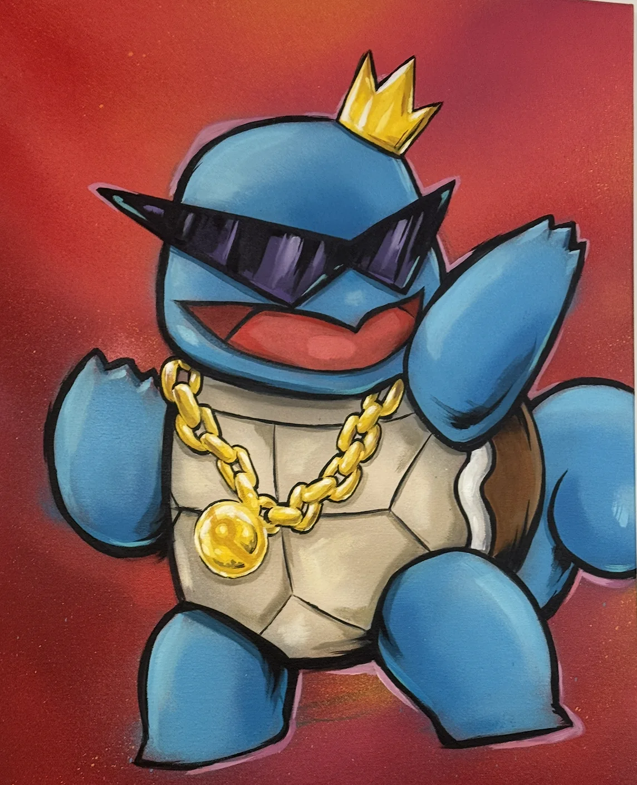
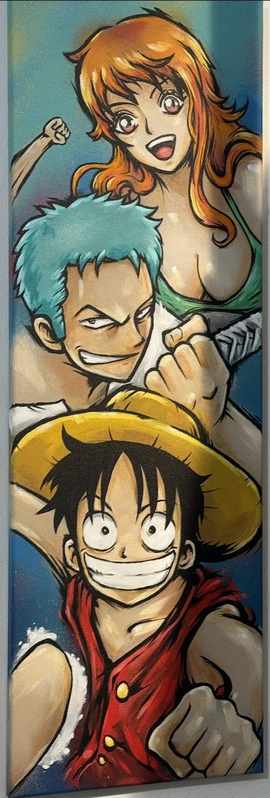
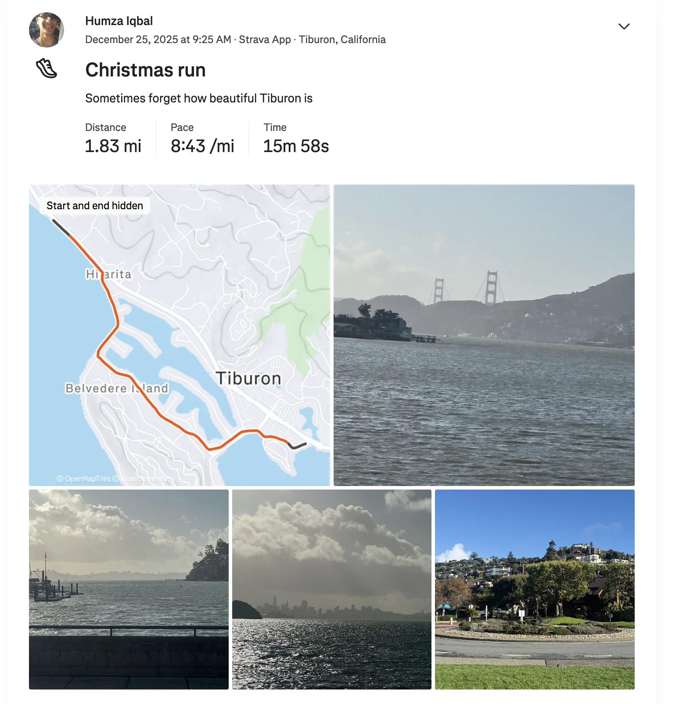
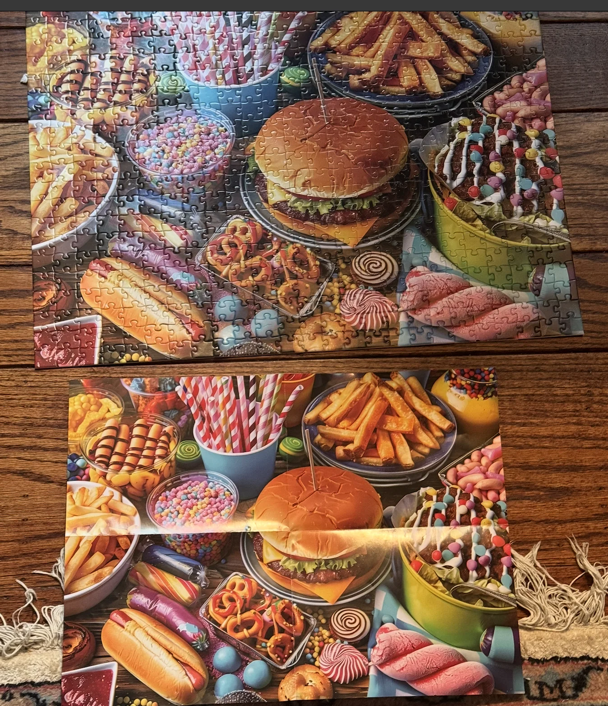
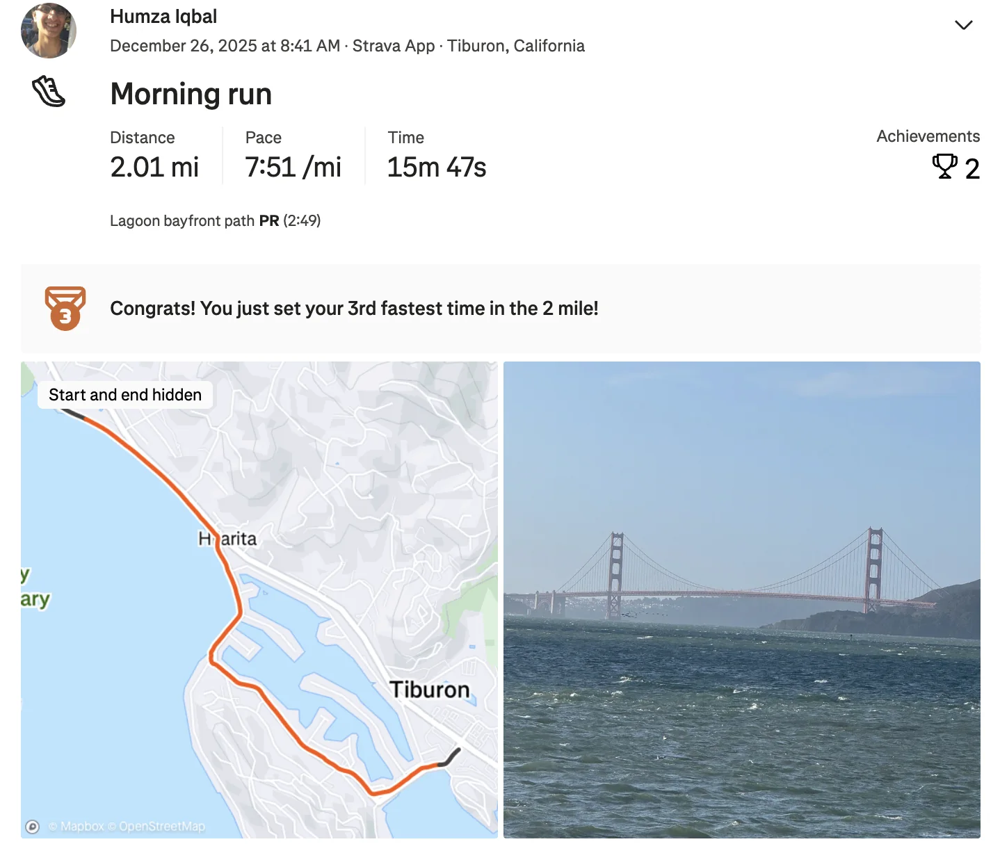
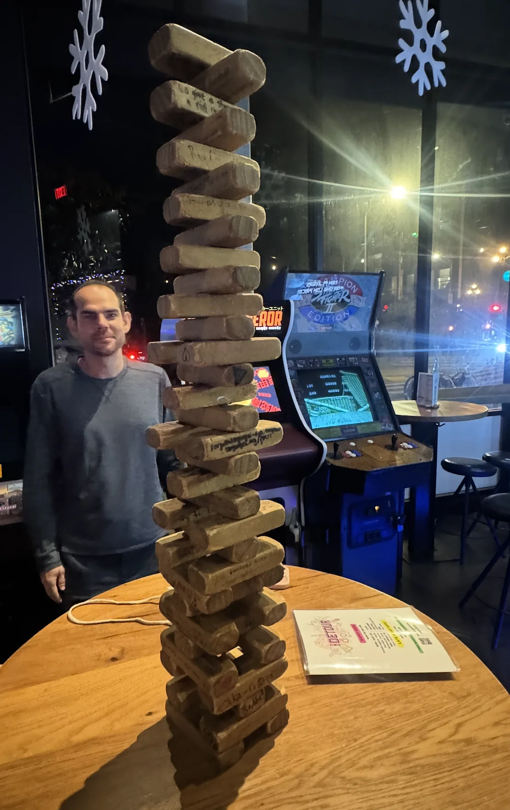
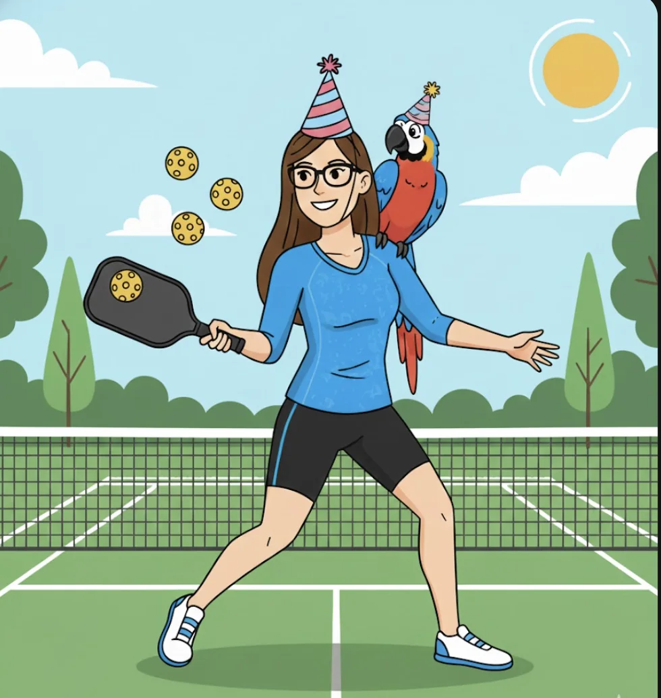

Shoutouts
Happy birthday to “The Pickleballer”!
Monday
Today I headed home to spend Christmas with my family. We take it chill and just hang around and talk which is nice. My younger sister ordered a 500 piece jig saw puzzle which she started working on. Its her first time ever doing a puzzle like this so I’m curious to see how it goes.
Tuesday
One of my best friends from college is in town so I go back to SF for the day to hang out with him. He’s a big foodie / bakerieie so we go on a tour starting from the Arsicault by Oracle Park over to Ashas for the boba, then to Al Carajo for their breakfast burrito and finally to El Gallo Giro (a Mexican food truck).
While at the food truck I overheard a bunch of teenie boppers who were in the midst of a very intriguing conversation. These were the snippets I could hear.
“He thought WE hooked up … He’s short and a midget … He came to class and said I hooked up with this Asian girl. … He was IN LOVE WITH ME”.
Afterwards we checked out some shops in the Mission one of which had some interesting art


Last week I said that if a certain TikTok “The Fisherman” made got to 350K views I would buy some wall art and based on what she’s been telling me that’s likely to happen quite soon (maybe it already has at the time of this writing) so the above could be some strong contenders.
I also took my friend in a self driving car for the first time which he liked!
We ended the day by going to a thrift store and then to Detour to play some games. It was really good to see him after not seeing him in over a year and I’m glad he’s kicking ass in his residency program!
Wednesday
Overall a pretty chill day hanging out with the family. When I have some time to myself I try to make flight school progress but really a lot of hanging around and talking and watching my sister continue to work on the puzzle.
In the evening though I do take my Dad to Kogi Gogi. I mentioned last week that I should do more stuff together and this winds up being quite fun! It helped that the waiter there knows me quite well (he also bought Pokemon cards from “The Quant” which is an interesting side fact). I show my Dad all the best cuts of meat, how to cook them, and so on! What isn’t cool though is the MASSIVE RAIN which really sucks.
When we get home we follow a Christmas tradition my younger sister is really into of watching Elf. It’s a perfectly fine Christmas movie.
Thursday
Merry Christmas! I read a description of Christmas once that basically said something to the effect of “Its the perfect time to cozy up indoors with friends and family”. Anyone who knows me should realize that the “cozy up indoors” part is something I quite detest and is a large part of why Christmas is one of my least favorite holidays of the year. The fact that the rain continued to keep us inside most of the day didn’t do any favors.
Thankfully in the morning before everyone else in the family woke up I did go for a few hour walk with what little sunshine there was in the day. Part way through I decided to turn that walk into a run because I hadn’t run in over a week and needed to keep it up. Considering I was wearing 3 layers and had rocks in my shoes I’m reasonably happy with this.

Once I got home it looked like my younger sister was finally about to finish the jigsaw puzzle. At this point we were all jumping in to help since we all got invested in seeing this finished. In terms of overall puzzle skills I would probably rank our family as follows
Mom
Younger Sister
Older Sister
Dad / Me
I was able to fit in 4-5 pieces of the jigsaw puzzle but even with the vast majority of it completed I was still struggling. I do have to give my younger sister props for working on this for 6+ hours. Eventually the puzzle came to a close and she finished it off in dramatic fashion!

I later learned that apparently “The Shadow Brigade”s mom is capable of finishing a puzzle like this in under 3 hours which boggles my mind.
We hung out some more and later in the evening I watched the Jujutsu Kaisen 0 movie which is a prequel to the main Jujutsu Kaisen story. Since the final fight of the movie takes place on December 24th that means it’s a Christmas movie since if Diehard is a Christmas movie then this should be too!
Friday
In the morning I went for another walk which I turned into a run part way through

Sadly after this the rain picked up again so the family stayed inside today. It was still a good time though.
Saturday
Today I headed back to SF. I went to trash pickup where we had a low of 6 people. I think this is the smallest trash pickup I’ve seen in a while but it was still fun. One of the trashers works for a works for a pharmaceutical company called Eli lily I want to email someone from their marketing team with a slogan for their drugs “waist not want not”. I looked up the CEO on LinkedIn but it turns out I need LinkedIn premium to be able to message him. Later I’ll try to track down the email of the marketing team or something. I really think this would be a great slogan for them!
I walked around for a while and wound up at the farmers market over in the Ferry building. There was one butcher that was supposedly selling pigeon meat but they were all out. Unlike dogs pigeons are actually halal in Islam so I could have made some pigeon pasta which I think would have been cool. I also had a flyby with “The Philanthropist”.
Later I met up with my family in the city. We went to Compton’s for some coffee then to Union Square. Most of my family thinks Union Square is “The ghetto” which to be honest it kinda was a few years ago and as my family’s #1 SF fan I am glad to report that Union Square is no longer “The ghetto”. While we were there, a Waymo was stuck at a traffic light for over 30 minutes. I felt bad for the guy inside who couldn’t really do much about the situation. Afterwards we went to Anatolian Table where I got to show off my trash pickup and get us a 30% discount on dinner which wound up being quite substantive.
Then I parted ways with the family and went to Detour with “The Fisherman,” “The Quant,” “The Philanthropist,” “Sergeant Sassy,” her boyfriend “Trivial Pursuit,” and another trasher who doesn’t have a nickname.
While there I learned that “The Philanthropist” was once a part of future farmers of America. She raised a pig which is normally supposed to go to a slaughter house but she couldn’t bear to see it go so she found it a home at an adoption shelter instead. As a result I am immediately changing her nickname to “This Little Piggie didn’t go to the slaughterhouse” because honestly “The Philanthropist” was not my best work in the nickname department.
We played a bunch of games from 4 player Pacman, to Killer queen, but the surprising highlight wound up being Jenga. I never would have thought this myself considering I’m usually not that good at it but we wound up playing for quite a while and got quite good. I think a large part of that was because we shifted the goal from setting the next person up to lose to actually trying to build the tower as high as we can. When thought of as the former Jenga is perpetuating the cycle of abuse we all wrought on each other, but when thought of as the latter we’re like the CCP with a shared objective.

While I don’t think we quite reached the heights of Babel I think we got pretty close!
Sunday
The day begins with a surprise birthday party for “The Pickleballer”! Me, “The Quant,” “The Taco,” “The Sparkle,” “Mirandom thoughts,” and of course “The Pickeballer” all go to Plow. For the bit I put my name down as Wuhan. Later when the person calling the names came for us she came up directly to us and said the name in a bit of a whisper unlike normally when they would shout it out which I thought was kinda funny.
As per usual I made a custom birthday card

And we got her some Tartine cookies since those are her favorites.
From there we went to Game Parlor to play some games. One of the games we played was called “Bad People”. In this game there are different questions and you are supposed to vote on who is the most likely to answer yes. This is an NSFW game so questions can include things like “Who is the most likely to die in a horror movie?”, “Who is the most likely to be a dirty cop?” and other such things. I got voted unanimously for “Most likely to be committed to an insane asylum,” “Most likely to have a secret sexual fetish,” and least surprising of all, “Most likely to appear on the no fly list”.
After the birthday party me and “The Quant” met up with “The Fisherman” and "This little piggie didn’t go to the slaughterhouse” to catsit as part of “The Fisherman”’s side hustle. This was a much more pleasant experience than when she was watching the dog as the cat wasn’t a yappie little shit that would pee everywhere. I’m not much of a pet person but even I could start to see the appeal of this cat.